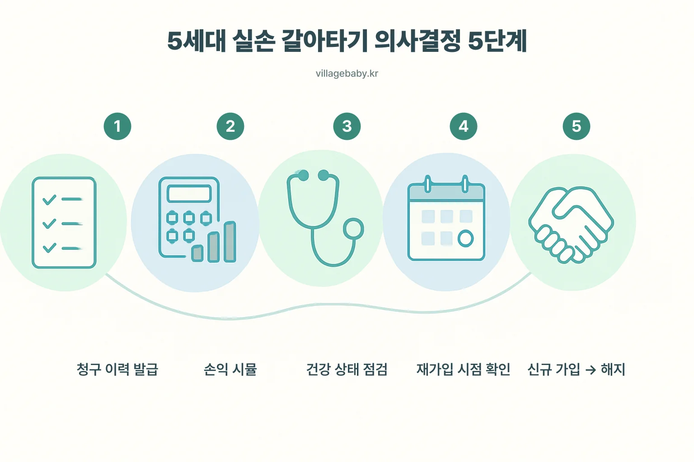
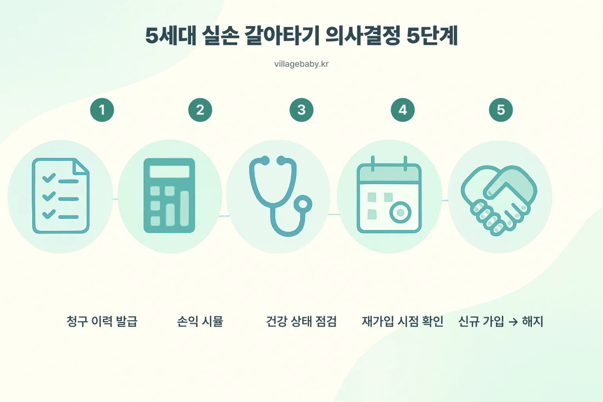
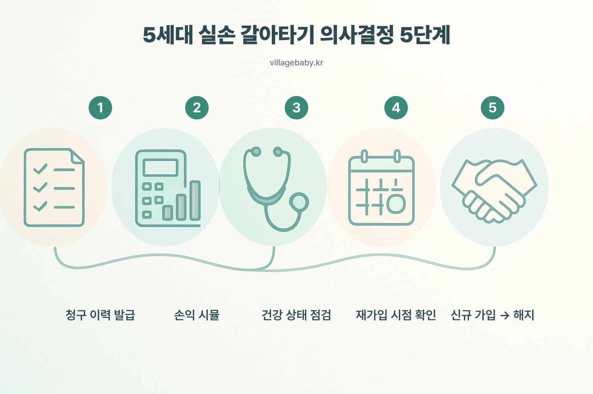

5세대 갈아타기 다이어그램 — 5장 비교
동일 텍스트 오버레이, 배경만 변주 5종 (medium quality). 실제 페이지(guide/5세대-실손-갈아타기-가이드)의 컨테이너 폭(780px)과 같은 환경에서 렌더링.
픽 결정 후 알려주세요. 채택본은 라이브 페이지의
img-decision-flow.png/.webp 로 교체되고 이 프리뷰 페이지는 제거됩니다.v1 변주 1

v2 변주 2

v3 변주 3

v4 변주 4

v5 변주 5